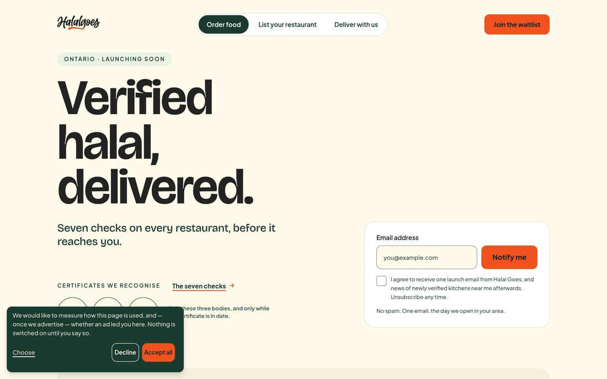

The marketing site is live and public today. The platform passes its own contract and invariant suites on every run. What stands between here and taking real orders is three items — most of it account setup measured in hours — and the long-lead blocker everyone has been bracing for turns out not to apply.
Seven pages, a desktop and a phone layout each, verified against the deployed build this morning rather than against a local copy.

halalgoes.com currently points at the first site, which sits on its own hosting project. A domain can belong to only one project at a time, so pointing it here means releasing it there first — a few minutes in the dashboard, then DNS propagation. It is a switch, not a rebuild, and it can happen whenever you say.
The first site did what it was for: it held the name and collected early interest while the platform was being built. This one is the next version of it, with the full argument for verification behind it — the published standard, a page for each of the three audiences, privacy and terms, and a waitlist wired to the same consent rules the product itself uses.
The other 33 are 29 deliberately deferred to a later version and 4 partial. None of this is self-assessment: the contract suite runs every published API operation against its declared shape, and the invariant suite runs against a real database — every order’s money decomposing to zero residual, no order state able to wait forever, a missing halal field rendering no badge rather than an optimistic one.
Our own decision log has carried this line for months: “SMS / A2P registration — nobody can sign in without it. Approval takes days to weeks. The longest lead time in the project.” We checked it against the carrier documentation this morning rather than taking it on trust.
Net effect: the item we had priced at “days to weeks, and nothing ships without it” is off the critical path.
| Gate | Owner | Time | State |
|---|---|---|---|
| Cloud account with billing So the platform has somewhere to run. We provision, configure and secure it from there. | You then us | Hours from you 1–2 days from us | Needed |
| Live payment keys Business entity, bank account and payout onboarding. The payment code is written and tested against the sandbox. | You | Hours to days | Needed |
| Messaging account details Account identifiers for the sign-in codes. The sender itself is already verified. | You | Hours | Confirm |
| Domain release Point halalgoes.com here. Released from its current project first, since a domain can only belong to one. | You | Minutes + DNS propagation | Your call |
| Verification pass across the apps Runs alongside everything above and does not wait on any of it. | Us | In progress | Underway |
| App store developer accounts Organisation, not individual. Gated on a D‑U‑N‑S number, which is the one genuinely long item left. Stage one does not need any of it. | You | 5–30 days for the D‑U‑N‑S | Start today |
| SMS carrier registration | — | — | Not a gate |
One line here is a genuine queue we cannot shorten — the D‑U‑N‑S, which is exactly why it wants starting today rather than on the day the stores are needed. Every other line is an account you open or work already running.
Restaurants and administrators sign in with email and password. Customers and riders sign in with a code to their phone. Those are two different systems, and only the second depends on messaging — which is what lets the first stage open without waiting on anything but hosting.
Real restaurants apply, upload real certificates, and our reviewers run the seven checks against them. Listings are created and approved.
No customer orders yet. This is the product’s central claim being exercised on real documents, before anyone is relying on it for dinner — and it needs nothing from the messaging stack.
Depends on: the cloud account, and nothing else. With it in hand by Wednesday 30 September, this date holds.
Full service: ordering, payment, dispatch, live tracking, payouts.
Opens once the verified restaurants from stage one are on the platform and the payment keys are live. By then every listing a customer sees has already been through the instrument.
Depends on: payment keys, messaging details, and stage one holding.
A single launch puts the untested surface in front of paying customers on day one. Staging it means the first people to exercise the system are restaurant owners and our own reviewers, who can tell us something is wrong without it costing anyone a meal. On a platform whose entire promise is halal verification, a wrong badge is not a defect to patch next sprint — it is a harm we cannot take back. The staged opening is also a date we can actually hold.
Capturing the screenshots on the previous page meant driving all four applications end to end. That found things every automated check had passed over.
| What | Why it mattered | State |
|---|---|---|
| Admin console could not sign in | A diagnostic message containing a character the underlying protocol forbids crashed the response it was attached to, on every request. The console that runs the seven checks could not be opened against test data at all — very likely why a large share of features sat marked “not yet verified”: nobody could reach them. | Fixed |
| Restaurant payouts page went blank | A missing guard took down not just the page but the whole application shell, navigation included. | Fixed |
| Customer app’s first screen unreadable | The title on the home screen measured 1.28:1 against its background. Legibility requires 4.5:1. Dark text had been placed on a dark bar — the first thing every customer sees. | Fixed |
| Rider app showed internal debug text | A raw internal value was rendering to riders in the live build. | Fixed |
| Low-contrast grey across both phone apps | One shared colour fails the legibility standard in several places. It is a foundational value used everywhere, so it is being changed deliberately rather than patched per screen. | Scheduled |
The first is ours and needs nothing from anyone. The second is yours — and one item on it now has a longer lead time than anything else left in this project.
| Work | Detail |
|---|---|
| Manual verification pass, all four apps | This is what turns “built” into “tested”. It was partly blocked until this week — the console fault on the previous page meant the administrative surface could not be driven end to end at all. That is fixed, so the pass can now cover everything. |
| Store listing preparation | Screenshots, descriptions, privacy declarations, content ratings and signed builds. None of it needs the developer accounts to exist, so all of it will be ready and waiting — submission becomes same-day once the accounts open. |
| Production provisioning | Written and rehearsed, ready to execute the hour the cloud account exists. |
| Action | Why now | |
|---|---|---|
| 1 | Start a D‑U‑N‑S number today Free, from Dun & Bradstreet | This is the longest lead time left in the project. Up to five business days if your entity is already on file — up to thirty if it is not. Both app stores need it to register you as an organisation. Nothing else on this list takes as long, and nothing else can be started as cheaply. It costs nothing to begin it this afternoon. |
| 2 | Approve the site | Until the pages are signed off we cannot scope the manual pass against a settled surface, and until that is scoped we cannot give you a production date worth holding us to. This is the item that unlocks the estimate. |
| 3 | Register the stores as an organisation | Not as an individual. A personal Google Play account opened since late 2023 must run a closed test with twelve testers for fourteen continuous days before it may publish. Organisation accounts publish straight to production. The account type is worth two weeks. |
| 4 | Cloud account with billing | The only thing between today and stage one on 5 October. |
| 5 | Resolve the payment account access | The sign-in is currently failing, so we cannot retrieve live keys. Account recovery against the registered owner’s address is the quickest route; if the account cannot be recovered, tell us and we will set up a fresh platform account instead. Payments stay in sandbox until this clears. |
| 6 | Messaging account credentials | The sender itself is already verified. We need the account identifiers and the verification service, which is a copy-and-paste from your dashboard. |
| 7 | The domain, when you are ready | The site is live and shareable today regardless. |
Restaurant onboarding and halal verification run in the browser. No app store, no developer account, no review queue, no D‑U‑N‑S. That is the second reason to open in two stages: the half of the product that carries the claim ships on a timeline nobody outside this room controls, while the store clock runs in parallel for stage two.
We could name one today, and it would be a guess. The honest sequence is: you approve the site, we scope the manual pass against a surface that has stopped moving, and then we give you a date with the store lead time added on top — one we can hold. A number produced before those two things is how dates get missed, and you have had enough of those.